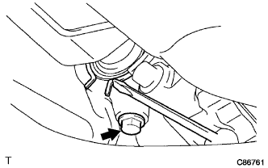

Transfer case oil seal RH (4WD) removed |
reference| 1. Battery Mina Star Minal Cut off |
reference| 2. The engine Anda cover RH is removed |
Remove two bolts and two screws.
Remove the nut and remove the engine and cover RH.
| 3. Pull out the automatic trance axleflood |
Use the socket hexagon wrench 10 to remove the drain plug and gasket and extract the fluid.
Tighten the drain plug via a new gasket.
| 4. Pull out transfile |
| 5. Remove the front tire |
| 6. Remove the front axle shaft nut RH |
| 7. Remove the front disc brake caliper Assy RH |
| 8. Speed sensor FR RH separation |
| 9. Tie rod end RH disconnection |
| 10. Front axle ASSY RH separation |
| 11. Front drive shaft ASSY RH removed |
|  |
Press the bearing bracket hole napping ring with a square axis flather and remove it from the bearing bracket.
Remove the No. 1 drive shaft bearing bracket bolt.
 |
Remove the front drive shaft ASSY RH from the drive shaft bearing bracket.
| 12. Transfer case oil seal RH is removed |
 |
Use SST to remove the oil seal from the case.